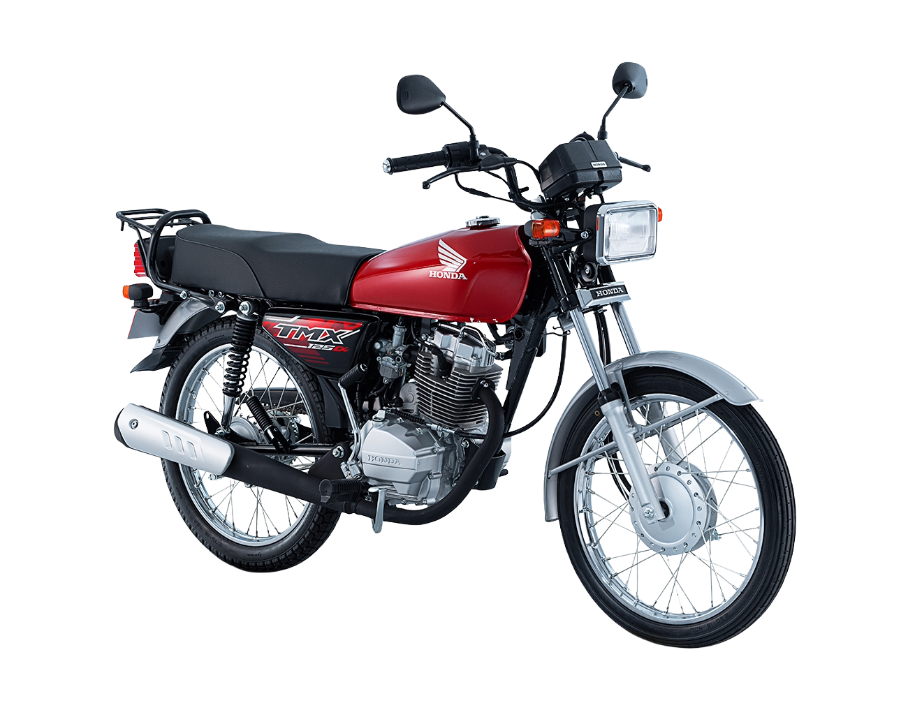
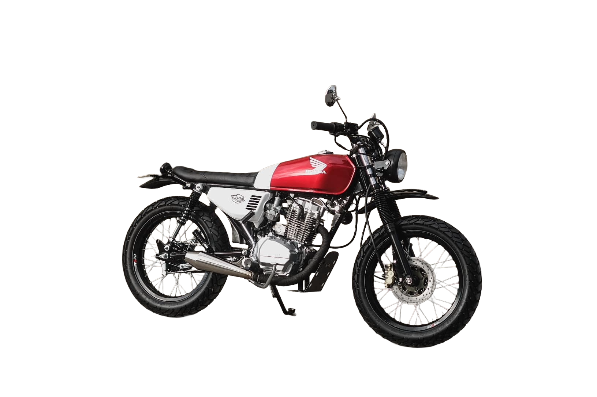
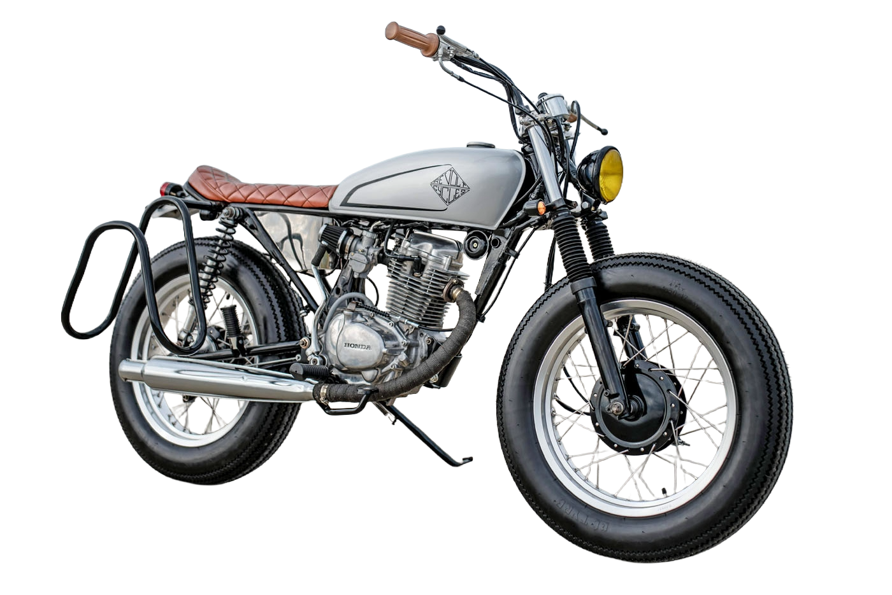
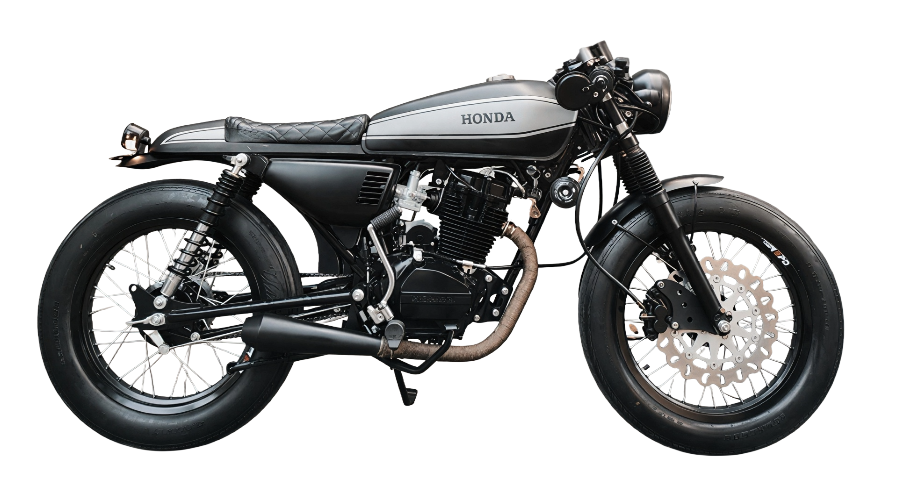
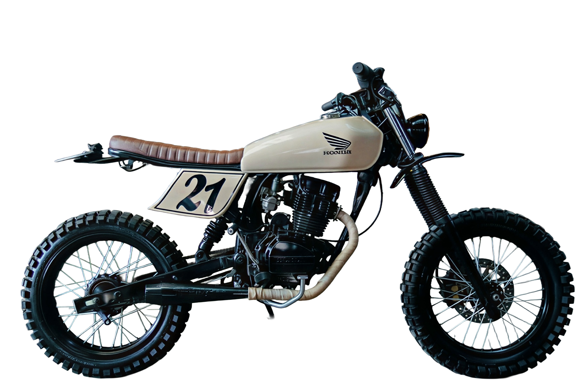
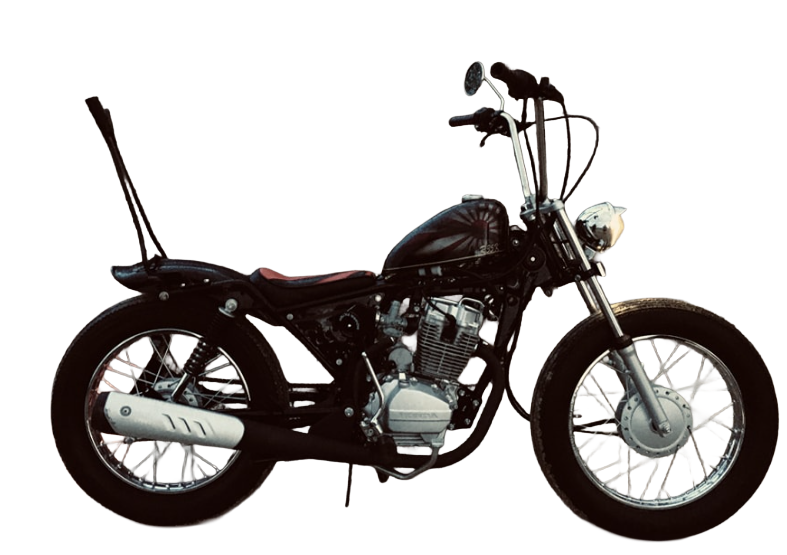

Choose bike type here
BASE BIKE
Custom x TMX 125
Choose a finish and explore the TMX 125 in a cleaner product-style presentation.

La Garahe
Candy Ruby Red
A vibrant metallic red.
Candy Ruby Red
A vibrant metallic red.
Features
Scrambler Build
Parts Guide To Build
A focused look at the red scrambler build with key callouts to guide the parts and accessories used in the setup.
Quick guide
You can click the part names around the bike to preview each part and open its buy link.

Brat Build
Parts Guide To Build
A focused look at the red brat build with key callouts to guide the parts and accessories used in the setup.
Quick guide
You can click the part names around the bike to preview each brat part.

Cafe Racer Build
Parts Guide To Build
A focused look at the black cafe racer build with key callouts to guide the parts and accessories used in the setup.
Quick guide
You can click the part names around the bike to preview each cafe racer part.

Selected Part
Seat Cowling
Rear seat cowl that gives the build its signature single-seat cafe racer finish.
View PartTracker Build
Parts Guide To Build
A focused look at the tracker build with key callouts using the same parts already shown in the features section.
Quick guide
You can click the part names around the bike to preview each tracker feature part.

Selected Part
Tracker Tank
Slimmed tank profile that supports the compact flat-track silhouette.
View PartBobber Build
Parts Guide To Build
A focused look at the black bobber build with key callouts using the same bobber parts already shown in the features section.
Quick guide
You can click the part names around the bike to preview each bobber part.

Selected Part
Small Tank
Compact bobber tank setup that keeps the whole silhouette tighter and cleaner.
View PartCommunity Picks
Build Statistics
See which custom build people like most, then vote for the style that fits you best.
Vote Your Build
Pick your favorite build style and your vote will update the count below.
Your vote is saved on this browser.
0 visitors